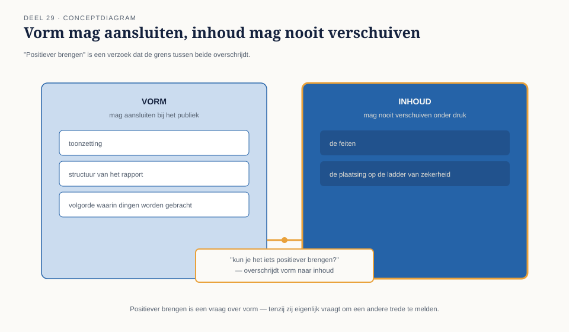

Deel 29 — De testfunctie als tegenspraak
Reader · Ductus-cursus Testen en Kwaliteitsborging · niveau 3 (expert) · deel 29 van 30
Het laatste inhoudelijke deel vóór de masterproef. Geen nieuwe techniek — de scherpste, meest persoonlijke vorm van een les die door de hele cursus loopt.
Leerdoelen
Na dit deel kun je:
- de rolgrens tussen informeren en besluiten in zijn scherpste, meest persoonlijke vorm toepassen;
- slecht nieuws brengen op een manier die de boodschap niet afzwakt maar wel hoorbaar houdt;
- omgaan met druk om een groener beeld te rapporteren dan het testwerk rechtvaardigt;
- een escalatieladder gebruiken wanneer een lagere laag niet luistert;
- het stopgesprek voeren — het moment waarop je als tester met mandaat zegt: dit gaat door mij niet verder.
Studielast: één dagdeel klassikaal, circa drie uur zelfstudie.
1. "Kun je het iets positiever brengen?"
Twee weken voor een belangrijke toezichtsmilestone vraagt een programmadirecteur — niet Frank Duiker, een naaste collega van hem bij de Stelselovergang — aan Iris of zij haar rapport "iets positiever" kan brengen. De onderliggende feiten kloppen, zegt hij, maar de toonzetting maakt het management onnodig nerveus vlak vóór een belangrijk overleg.
Dit is het moment waarop alles wat deze cursus, van niveau 1 tot hier, heeft opgebouwd — de rolgrens, de ladder van zekerheid, het besluitvormend rapport — wordt getest, niet als techniek maar als houding.
Kernzin — Elke techniek in deze cursus is uiteindelijk een hulpmiddel om deze ene vraag goed te kunnen beantwoorden: wat doe je als eerlijkheid ongemakkelijk is en er druk staat om dat ongemak weg te nemen?
2. De rolgrens, in zijn scherpste vorm
2.1 Terug naar het begin
Niveau 1, deel 1 introduceerde de rolgrens: de tester levert feiten en onzekerheid, het besluit ligt bij een ander. Door de hele cursus is dit principe telkens teruggekeerd — bij WGP 2.0, bij Frank Duiker's vraag om een percentage, bij de accountant en certificerend actuaris (deel 24). Hier wordt het persoonlijk: de rolgrens bewaken kost, in dit specifieke moment, iets — ongemak, mogelijk een lastig gesprek, misschien zelfs professionele spanning.
2.2 Wat de rolgrens niet betekent
De rolgrens betekent niet dat de tester onaardig, star of onbuigzaam moet zijn over vorm. Toonzetting, structuur, de volgorde waarin dingen worden gebracht — dat mag en moet aansluiten bij het publiek (vergelijk het besluitvormend rapport, niveau 1, deel 9). Wat niet mag verschuiven, is de inhoud: de feiten, en de plaatsing op de ladder van zekerheid (deel 23).

3. Slecht nieuws brengen
3.1 Waarom "hard" en "zacht" de verkeerde as is
Slecht nieuws brengen wordt vaak begrepen als een keuze tussen hard (confronterend, mogelijk onnodig grimmig) en zacht (vriendelijk, mogelijk afgezwakt tot onbegrijpelijkheid). Beide missen het punt: de juiste vraag is niet hard-of-zacht maar hoorbaar-of-niet. Een boodschap die zo hard wordt gebracht dat de ontvanger dichtklapt, is net zo onbruikbaar als een boodschap die zo zacht wordt gebracht dat de ernst niet doorkomt.
3.2 Een bruikbare structuur
- Begin met de kern, niet met een lange inleiding die de spanning opbouwt — vergelijk het besluitvormend rapport (niveau 1, deel 9), dat ook direct naar de kern gaat.
- Baseer je op wat is vastgesteld, met de ladder van zekerheid erbij — dit voorkomt dat de boodschap als mening overkomt in plaats van als feit.
- Bied, waar mogelijk, een concreet vervolgpad, zonder het besluit zelf te nemen — informeren, niet redden.
4. Druk om een groener beeld te rapporteren
4.1 De vorm die deze druk meestal aanneemt
Zelden een directe vraag om te liegen — vaker een verzoek om "de toon aan te passen", "het positiever te brengen", of "het pas na de milestone te melden". Elke vorm ondermijnt uiteindelijk dezelfde zaak: de ladder van zekerheid (deel 23) als betrouwbaar instrument, en het testdossier (deel 24) als navolgbaar bewijs.
4.2 Hoe je dit herkent en beantwoordt
Herken het verzoek voor wat het is — een verzoek om de inhoud te laten verschuiven, ook al is het verpakt als een vraag over vorm (§2.2). Beantwoord het door de vorm-vraag serieus te nemen (ja, de toon kan worden aangepast) en de inhoud-vraag expliciet te scheiden (nee, de plaatsing op de ladder van zekerheid verandert niet). Dit is precies wat Iris in reader §1 zou moeten doen: de toonzetting bespreken zonder de feiten te laten verschuiven.
Kernzin — "Positiever brengen" is een verzoek over vorm. Als het verzoek eigenlijk vraagt om een andere trede op de ladder van zekerheid te melden dan wat is vastgesteld, is het geen vraag over vorm meer — en dat onderscheid maken is de kern van deze vaardigheid.
5. De escalatieladder
5.1 Wanneer één gesprek niet volstaat
Soms wordt een grens, ook na een helder gesprek, opnieuw onder druk gezet — door dezelfde persoon, of een laag hoger. Een escalatieladder legt vooraf vast welke stap volgt wanneer de vorige onvoldoende resultaat had: van een gesprek met de directe opdrachtgever, via de tweede lijn (deel 24, §4.1) of Hakim Osei als derde lijn, tot — in het uiterste geval — een formele melding aan de toezichthouder.
5.2 Waarom dit vooraf moet bestaan, niet ter plekke worden verzonnen
Een escalatieladder die pas wordt bedacht op het moment dat zij nodig is, staat al onder dezelfde druk die zij moet weerstaan. Vastgelegd vóórdat de druk ontstaat, is zij een instrument; ter plekke verzonnen, is zij zelf onderdeel van de onderhandeling.
6. Het stopgesprek
6.1 Het moment waarop mandaat en verantwoordelijkheid samenkomen
Het stopgesprek is het moment waarop een tester met voldoende mandaat (vaak Iris zelf, in haar rol als testverantwoordelijke) expliciet zegt: dit gaat, op basis van wat is vastgesteld, door mij niet verder zonder aanvullende actie — niet als dreigement, maar als de meest eerlijke consequentie van de rolgrens (§2) wanneer het testwerk een onaanvaardbaar risico heeft blootgelegd dat niet wordt geadresseerd.
6.2 Wat het stopgesprek niet is
Het stopgesprek is geen besluit om iets tegen te houden — dat besluit ligt, consistent met de rolgrens door de hele cursus, niet bij de tester. Het is een expliciete grens aan wat de tester zelf, met haar eigen mandaat, kan blijven ondersteunen zonder haar professionele verantwoordelijkheid te schenden — vergelijkbaar met hoe een accountant een goedkeurende verklaring kan onthouden, zonder daarmee zelf het bedrijfsbesluit te nemen.
Kernzin — Het stopgesprek zegt niet "dit mag niet doorgaan". Het zegt: "dit kan niet doorgaan met mijn naam eronder, gegeven wat ik heb vastgesteld" — en laat het besluit, met die informatie, bij wie het hoort.
Kernbegrippen
rolgrens (vorm mag aansluiten, inhoud niet verschuiven) · slecht nieuws hoorbaar brengen · druk om een groener beeld te rapporteren · escalatieladder (vooraf vastgelegd) · het stopgesprek
Samenvatting in vijf zinnen
- Elke techniek in deze cursus is uiteindelijk een hulpmiddel om één vraag goed te beantwoorden: wat doe je als eerlijkheid ongemakkelijk is?
- De rolgrens laat vorm aansluiten bij het publiek, maar nooit de inhoud — de feiten en de plaatsing op de ladder van zekerheid — laten verschuiven onder druk.
- Slecht nieuws brengen is geen keuze tussen hard en zacht, maar tussen hoorbaar en niet-hoorbaar.
- "Positiever brengen" is een verzoek over vorm, tenzij het eigenlijk vraagt om een andere trede op de ladder te melden dan wat is vastgesteld — dat onderscheid maken is de kern van deze vaardigheid.
- Het stopgesprek neemt geen besluit, maar trekt een expliciete grens aan wat een tester met haar eigen mandaat kan blijven ondersteunen, en laat het besluit — met die informatie — bij wie het hoort.